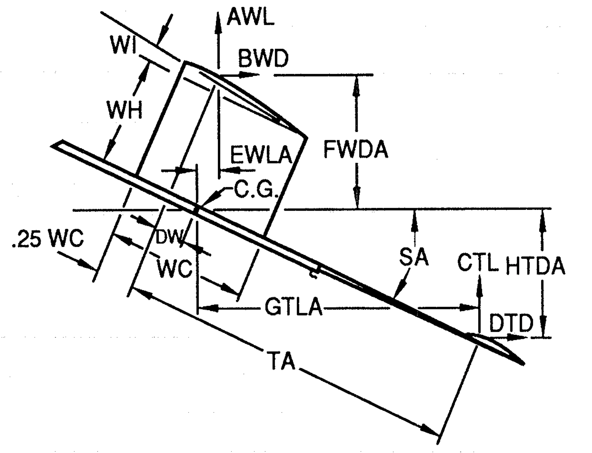

Deriving Erbach’s Power Equations
Contents
Deriving Erbach’s Power Equations¶

Model Dimensions¶
we will define a few basic model properties, which you should be able to derive from model plans or, even better, from youe OpenSCAD model. Names in all caps are from the above diagram, or from his code.
lm - length of motor stick (\(l_{ms}\))
SA - angle of body relative to flight direction (\(\alpha\))
xw - wing offset from front of stick (\(x_w\))
AW - wing area (\(S_w\))
WC - wing chord (\(C_w\))
WH - elevation of wing trailing edge (\(h_w\))
WI - wing incidence (\(\phi\))
DW - distance from wing AC to center of gravity (\(x_{cg}\))
The stabilizer is positioned at the end of the tail boom.
lb - length of tail boom (\(x_{tb}\))
sc - stab chord (\(C_s\))
as - stab area (\(S_s\))
Erbach’s diagram defined the distance from the wing to stab aerodynamic centers;
TA distance between aerodynamic centers of wing and stab in (\(x_{ac}\))
Aerodynamic Forces¶
The wing and stab aerodynamic forces act at the aerodynamic centers of each surface, which is assumed to be at the quarter-chord point for this analysis.
The aerodynamic forces are:
AWL - Wing lift force (\(L_w\))
BWD - Wing drag force (\(D_w\))
CTL - Tail lift force (\(L_s\))
DTD - Tail drag force (\(D_s\))
DTD - Tail Drag force (\(D_s\))
Our first task is to derive the moments caused by these four forces, relative to the center of gravity.
Using a little geometry, we can come up with equations for the moment arms for these four forces:
FWDA - wing drag moment arm (\(y_{mw}\))
EWLA - wing lift moment arm (\(x_{mw}\))
HTDA - stab drag moment arm (\(y_{ms}\))
GTLA - stab lift moment arm (\(x_{ms}\))
For level flight, we need to balance the moments generated by these forces. A positive moment moves the nose up:
import sympy
In the sympy code that follows, we create symbols for this quantities that are model properties only, not things derived from those properties using equations in our work. We will figure those properties out from our design, and the aerodynamic properties of the airfoils chosen. Everything else needs to be calculated using an expression of some kind, and we will let sympy figure out those expressions for us!
Design Properties¶
These quantities are all derived from our design work. They will be provided either manually from a plan, or automatically fro our Openscad design tool.
x_cg, x_ac, h_w, alpha = sympy.symbols('x_cg x_ac h_w alpha')
S_w, S_s = sympy.symbols('S_w S_s')
M_w = sympy.symbols('M_w')
Derived Expressions¶
From those basic properties and a bit of trigonometry, we get these equations. Because of the way sympy works, it will not display the left-hand side of these expressions, just the expression from the right-hand side.
x_mw = h_w * sympy.sin(alpha) + x_cg * sympy.sin(alpha)
x_mw
y_mw = h_w * sympy.cos(alpha) - x_cg * sympy.sin(alpha)
y_mw
x_ms = (x_ac - x_cg) * sympy.cos(alpha)
x_ms
y_ms = (x_ac - x_cg) * sympy.sin(alpha)
y_ms
Aerodynamic Properties¶
We select an airfoil for the wing and stab for the design. We will need the lift and drag coefficient curve data for those airfoils. Our calculations depend on an input angle of attack (\(\alpha\))
rho, u = sympy.symbols('rho u')
C_lw, C_dw, C_ls, C_ds = sympy.symbols('C_lw C_dw C_ls C_ds')
L_w = rho * u**2 * C_lw * S_w / 2
L_w
D_w = rho * u**2 * C_dw * S_w / 2
D_w
L_s = rho * u**2 * C_ls * S_s / 2
L_s
D_s = rho * u**2 * C_ds * S_s / 2
D_s
Velocity for Level Flight¶
The total lift must equal the model weight for level flight. We can use this fact to figure out the level flight speed.
eq2 = L_w + L_s - M_w
eq2
eq3 = sympy.solve(eq2,u)
eq4 = eq3[1]
eq4
That looks like something we can use. Can we get Python to do this calculation. Sure! In fact, we can see the expression we need to write by asking sympy to show it to us!
print(sympy.python(eq4))
M_w = Symbol('M_w')
rho = Symbol('rho')
C_ls = Symbol('C_ls')
S_s = Symbol('S_s')
C_lw = Symbol('C_lw')
S_w = Symbol('S_w')
e = sqrt(2)*sqrt(M_w/(rho*(C_ls*S_s + C_lw*S_w)))
That last line is what we need. For now, we can copy and paste that to see what we get. For the demonstration, I will set a few values manually here, using values from Erbach’s code
import pint
u = pint.UnitRegistry()
M_w = 0.07 * u.ounce * u.gravity
rho = 0.00119 * 2.0 * u.slugs/u.ft**3
C_ls = 0.06
C_ds = 0.008
C_lw = 0.2
C_dw = 0.01
S_w = 150.0 * u.inch**2
S_s = 0.4 * S_w
u_l = (2*(M_w/(rho*(C_ls*S_s + C_lw*S_w)))) **0.5
u_l.to_base_units()
u_l.to('ft/sec')
That number matches Figure 3 in Erbach’s article, so it looks like we are doing things right. Notice that I used pint to make sure my units were consistent in these calculations. I had to convert the weight in ounces to get the mass of the model for this, since we are working with forces, not weights. Newton’s second law tells us what to do!
Power for Level Flight¶
The thrust we need to maintain level flight is equal to the total drag of the model. For simplicity, we will only consider drag produced by the wing and stab. Once we know this value, the required power is just thrust times speed. Here are the code to calculate the power:
q = rho * u_l**2/2.0 / u.gravity
q.to_base_units()
D_t = q * (S_w * C_dw + S_s * C_ds)
power = D_t * u_l
power.to('in oz/sec')
This number also matched the value from Erbach’s article. We have the basic informaton we need to move on the the calculation of estimated flight time. For that, we need to look at Doug McLean’s work.